1. Introduction
What is the Solar Panel Monitoring System?
The Solar Panel Monitoring System is a professional-grade web application designed to help solar panel owners, installers, and engineers analyze the performance of photovoltaic (PV) systems. Whether you have a small residential setup or a commercial installation, this tool provides comprehensive insights into your solar energy production.
Key Benefits
| Benefit | Description |
|---|---|
| Performance Tracking | Monitor daily and monthly energy production |
| Efficiency Analysis | Calculate Performance Ratio (PR) to understand system efficiency |
| Problem Detection | Identify underperformance through Expected vs. Actual comparisons |
| Temperature Impact | Understand how heat affects your panel efficiency |
| Battery Awareness | Filter data when batteries are full for accurate PR calculations |
| Professional Reports | Export high-resolution graphs for documentation |
2. Getting Started
Accessing the Application
Open your web browser and navigate to the application URL:
http://localhost:8501You will see the main dashboard interface:
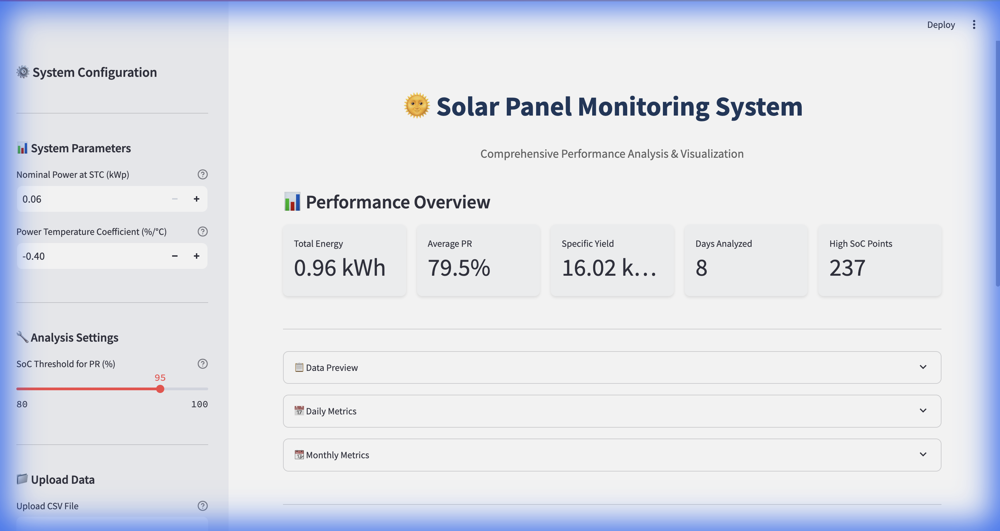
The interface consists of two main areas:
- Left Sidebar – System configuration and data upload
- Main Content Area – Performance metrics, graphs, and analysis
3. System Configuration
Before analyzing your data, you need to configure your solar system parameters. These settings are located in the left sidebar.
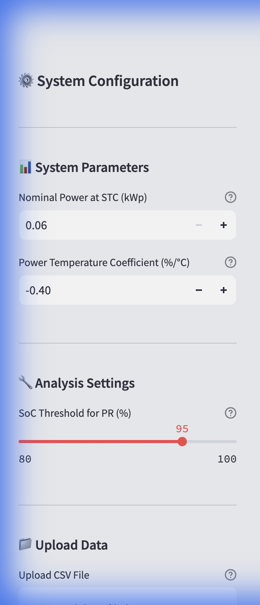
3.1 System Parameters
Nominal Power at STC (kWp)
This is your solar system's rated power output under Standard Test Conditions.
| Field | Description |
|---|---|
| What to Enter | Your panel/system's nameplate power rating |
| Unit | Kilowatt-peak (kWp) |
| Allowed Range | 0.001 to 1000 kWp |
| Example | For a 48W panel, enter 0.048 |
Power Temperature Coefficient (%/°C)
This value represents how much your panel's power output decreases as temperature rises above 25°C.
| Field | Description |
|---|---|
| What to Enter | Temperature coefficient from your panel's datasheet |
| Unit | Percentage per degree Celsius |
| Typical Range | -0.30% to -0.50% for silicon panels |
| Example | Enter -0.40 for a -0.40%/°C coefficient |
3.2 Data Filtering Settings
The system provides advanced anomalous data filtering capabilities to help you accurately analyze your solar system's performance by excluding problematic data points that could distort your metrics.
- System Faults: Inverter failures, disconnections, or circuit breakers tripping
- Shading Events: Unexpected shadows from trees, buildings, or passing clouds
- Maintenance: Periods when the system was intentionally turned off
- Battery Curtailment: When batteries are full and the system stops charging
Irradiance Threshold (W/m²)
This setting defines the minimum irradiance level at which your system should be producing power.
| Field | Description |
|---|---|
| Default Value | 50 W/m² |
| Allowed Range | 0 to 1000 W/m² |
| Typical Values | 30-100 W/m² depending on panel sensitivity |
| Purpose | Timestamps with irradiance above this value are expected to produce power |
- Lower values (30-50 W/m²): Catches more potential issues but may include legitimate low-light periods where minimal power is expected
- Higher values (80-100 W/m²): More conservative, only flags clear anomalies during good sunlight conditions
- Recommendation: Start with 50 W/m² and adjust based on your system's actual low-light performance
Power Threshold (W)
This defines what constitutes "no power output" for filtering purposes.
| Field | Description |
|---|---|
| Default Value | 0 W |
| Allowed Range | 0 to 100 W |
| Typical Values | 0-10 W for most systems |
| Purpose | Power at or below this value is considered "not producing" |
- Measurement Noise: Some monitoring systems report small phantom readings (1-5W) even when the panel is off
- Internal Consumption: Inverter self-consumption might show as minimal power draw
- Example: If your system shows 3W at night due to inverter consumption, set this to 5W to avoid false positives
Low SoC Threshold (%)
This setting helps distinguish between system faults and battery-full curtailment.
| Field | Description |
|---|---|
| Default Value | 95% |
| Allowed Range | 50% to 100% |
| Purpose | Only flag as anomalous if battery SoC is below this threshold |
The filtering logic works as follows:
Data point is ANOMALOUS if ALL conditions are met:
1. Irradiance > Irradiance Threshold (e.g., 50 W/m²)
2. Power ≤ Power Threshold (e.g., 0 W)
3. SoC < Low SoC Threshold (e.g., 95%)
Why condition #3 matters: When your battery is at 95%+ charge, the system intentionally reduces or stops power generation to protect the battery. This is normal behavior, not a fault. By setting this threshold high (e.g., 95%), you ensure that periods of legitimate curtailment (when battery is full) are NOT flagged as anomalies.
Conversely: If the system has high irradiance, zero power output, but the battery is only at 60% SoC, this indicates a genuine problem since the battery should still be accepting charge.
| System Type | Low SoC Threshold | Reasoning |
|---|---|---|
| No Battery System | 100% (or N/A if no SoC data) | No curtailment scenarios to exclude |
| Lead-Acid Batteries | 90-95% | Often stop charging around 90-95% to prevent overcharging |
| Lithium Batteries | 95-98% | Can charge closer to 100% but may curtail at 95%+ |
| Grid-Tied (No Storage) | 100% | No battery, so all zero-power anomalies are genuine faults |
How to Use Data Filtering
After configuring your thresholds in the sidebar, data filtering is applied in two main areas:
- Custom Range Performance Graphs: Toggle between "All Data" and "Filtered Data" modes using the Data Mode radio button
- Monthly Performance Graphs: Toggle between "All Data" and "Filtered Data" modes to see hourly averages with/without anomalies
When "Filtered Data" mode is active, the system will:
- ✅ Exclude all timestamps matching the anomalous criteria
- ✅ Recalculate hourly averages using only clean data
- ✅ Display comparison statistics showing how many points were excluded
- ✅ Show before/after comparison graphs
Scenario: You notice your average monthly power output is 20% lower than expected in June.
- Navigate to Monthly Performance Graphs and select June
- Set Data Mode to "All Data" - you see low averages
- Change Data Mode to "Filtered Data"
- System reports: "Excluded 145 of 8,640 data points (1.7%)"
- Filtered averages now show 25% higher power output
- Conclusion: Your system was offline for brief periods (maybe inverter resets), but overall performance was actually good
3.3 Analysis Settings
SoC Threshold for PR (%)
This setting controls how the system handles data when your battery is nearly full.
3.4 Daytime Definition
For accurate performance analysis (e.g., specific yield, operating hours), crucial metrics are only calculated during daytime hours. You can configure how the system defines "daytime".
Daytime Mode Configuration
In the sidebar, you will find the Daytime Definition settings:
| Setting | Description |
|---|---|
| Use sunrise/sunset from weather data |
Enable this checkbox to dynamically calculate daytime based on actual sunrise and
sunset times for your location and date.
|
| Manual Schedule (Fixed) |
If the dynamic option is unchecked (or no location set), the system uses fixed hours.
|
4. Uploading Your Data
The system accepts solar monitoring data in CSV format. You have two options for providing data:
4.1 Upload a CSV File
- In the sidebar, locate the "Upload CSV File" section
- Click "Browse files" or drag and drop your CSV file
- Wait for the file to be processed
4.2 Paste Data Directly
- Scroll down in the sidebar to "Or paste data directly"
- Copy your CSV data (including headers)
- Paste into the text area
4.3 Process Your Data
- Click the "🚀 Process Data" button
- Wait for the system to analyze your data
- View the Column Detection Results to confirm all columns were identified
| Status | Meaning |
|---|---|
| ✅ Detected 'Column Name' as type | Column successfully identified |
| ⚠️ Could not detect type column | Column not found (optional columns may be missing) |
| 🔄 Detected mV, converting to V | Automatic unit conversion applied |
| 📊 Data frequency: ~X minutes | Data interval detected |
5. Data Format Requirements
The system is designed with a smart data parser that offers significant flexibility. You do not need to follow a rigid template, as long as your data contains the necessary information with descriptive headers.
5.1 Supported File Formats
- File Types:
.csv(Comma Separated Values) or.txt(Plain Text). - Delimiter: Comma (
,) is the standard delimiter. - Structure: The first row must be the header row containing column names.
5.2 Column Flexibility
- Order doesn't matter:
Voltage, Current, Dateworks just as well asDate, Voltage, Current. - Case doesn't matter:
voltage,Voltage, andVOLTAGEare all accepted. - Extra columns are ignored: You can leave other columns (like "Inverter ID" or "Status") in your file; they won't cause errors.
5.3 Naming Conventions
The system recognizes columns using "smart matching" patterns. If your header contains any of the following terms, it will be detected correctly:
| Data Point | Status | Accepted Header Keywords | Notes |
|---|---|---|---|
| Timestamp | Required | timestamp, time, date, datetime,
dt
|
Supported Formats:
Note on Ambiguity: |
| Current (DC) | Required | current, amps, amp, i, dc
current |
Unit: Amperes (A). |
| Voltage (DC) | Required | voltage, volts, volt, v, dc
voltage |
Unit: Volts (V). The system automatically converts mV to V if values are > 500. |
| Irradiance | Required | irradiance, ghi, solar_radiation,
w/m2, insolation
|
Unit: Watts per square meter (W/m²). |
| Temperature | Recommended | temperature, temp, cell temp, (C)
|
Unit: Celsius (°C). Used for Expected Power calculations. |
| Battery SoC | Optional | soc, battery, charge,
state of charge
|
Unit: Percentage (0-100%). |
5.4 Data Frequency
The system is agnostic to the time interval between your data points.
- Interval Flexibility: Data can be in 1-minute, 5-minute, 15-minute, or 1-hour intervals.
- Auto-Detection: The system automatically calculates and displays your data frequency (e.g., "Data frequency: ~5 minutes").
- Consistency: Detailed analysis works best with consistent intervals, but slight variations are handled gracefully.
- 15-60 Minutes: Ideal for long-term Performance Ratio (PR) and yield analysis. Fast to process.
- 1-5 Minutes: Better for detailed troubleshooting and detecting rapid cloud cover changes.
- Seconds: Accepted, but large datasets (multi-year second-by-second) may be slower to process.
5.5 Example Import Data
You can copy the block below and save it as a .csv file to test the system immediately:
Timestamp,Voltage_V,Current_A,Irradiance_W_m2,Temperature_C,SoC_%
2024-03-15 08:00:00,32.5,2.1,150,25.4,85
2024-03-15 08:15:00,32.8,2.8,200,26.1,86
2024-03-15 08:30:00,33.1,3.5,350,28.2,88
2024-03-15 08:45:00,32.9,4.2,500,31.5,906. Understanding Key Metrics
6.1 Performance Ratio (PR)
Definition: The ratio of actual energy output to the theoretical maximum output.
PR = (Actual Energy / Expected Energy) × 100%6.2 Specific Yield
Definition: Energy generated per unit of installed capacity.
Specific Yield = Energy (kWh) / Installed Capacity (kWp)6.3 Expected Power
Definition: Theoretical power output based on current conditions.
Expected Power = Rated Power × (Irradiance / 1000) × Temperature Factor
Temperature Factor = 1 + (Temp Coefficient × (Cell Temp - 25°C))7. Integrating Weather Data
If your uploaded data lacks Irradiance or Temperature readings, or if you want to compare against satellite data, you can fetch historical weather data from Open-Meteo.
- Locate "Weather Data" in the sidebar (below the Process button).
- Enter Location:
- Option A: Google Maps URL: Paste a URL and click "📍 Parse URL".
- Option B: Lat/Lon: Manually enter Latitude and Longitude.
- Click "☁️ Fetch Weather Data".
- The system will retrieve hourly historical data, resample it to your frequency, and merge it (filling gaps or adding new columns).
8. Understanding the Dashboard
Once your data is processed, the dashboard displays key performance metrics.
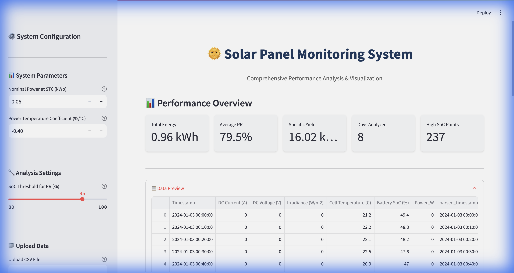
8.1 Performance Overview Cards
The top section displays five key performance indicators:
| Metric | Description | Good Values |
|---|---|---|
| Total Energy | Total electricity generated (kWh) | Higher is better |
| Average PR | Average Performance Ratio across all days | 75-85% typical |
| Specific Yield | Energy per installed capacity (kWh/kWp) | 3-6 kWh/kWp/day |
| Days Analyzed | Number of days in your dataset | Based on your data |
| High SoC Points | Data points where battery was ≥95% full | Excluded from PR |
8.2 Data Preview Section
Expand the "Data Preview" section to see your raw data with calculated fields including Power_W (Current × Voltage).
9. Daily Performance Analysis
Navigate to the 📈 Daily Graphs tab to view detailed daily performance charts.
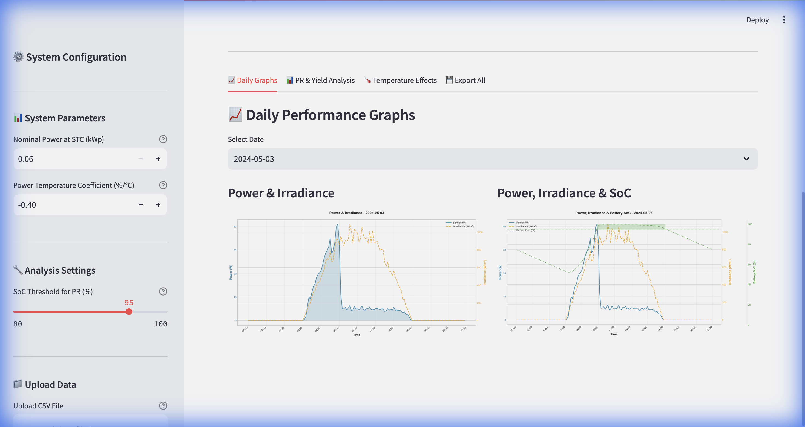
9.1 Selecting a Date
Use the "Select Date" dropdown to choose which day's data to visualize. Each day has its own separate graphs.
9.2 Power & Irradiance Graph (Left)
This chart shows the relationship between solar radiation and your system's power output throughout the day.
| Line Color | Metric | Description |
|---|---|---|
| Blue (filled area) | Power (W) | Your system's actual power output |
| Orange (dashed) | Irradiance (W/m²) | Solar radiation hitting the panels |
9.3 Power, Irradiance & SoC Graph (Right)
This three-way chart adds battery state-of-charge to the analysis, showing when power curtailment may occur.
10. Monthly Performance Analysis
Navigate to the 📊 Monthly Graphs tab to view hourly averaged performance for an entire month.
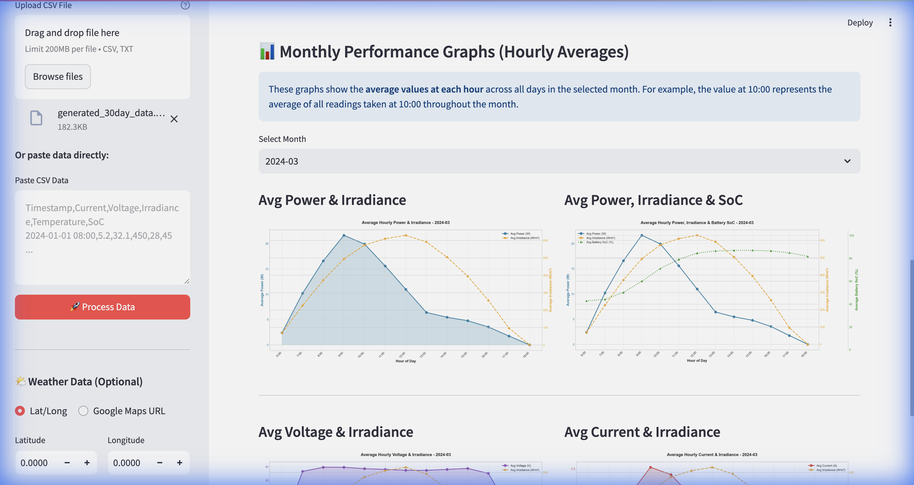
10.1 Understanding Hourly Averages
These graphs show the average behavior of your system at each hour of the day across all days in the selected month.
- Example: The data point at 12:00 PM represents the average of all 12:00 PM readings in that month.
- Use Case: Identifies consistent shading issues or orientation problems.
10.2 Data Mode in Monthly Analysis
Similar to Custom Range, Monthly Analysis features a Data Mode toggle offering:
- All Data: Hourly averages include all timestamps, including system faults and downtimes
- Filtered Data: Hourly averages exclude anomalous timestamps, showing true performance when system is operating
While both features support Data Mode, they serve different purposes:
- Monthly Analysis: Best for understanding typical hourly patterns in a month (e.g., "Does my system always underperform at 3 PM?")
- Custom Range: Best for specific time period investigation (e.g., "What went wrong the week of June 10-17?")
Interpreting Filtered Monthly Averages
When you enable Filtered Data mode on monthly graphs:
- Each hour's average excludes anomalous points from that hour across all days
- Pattern detection becomes more accurate (e.g., 2 PM dip due to shading vs. fault)
- Comparison baseline shows your system's true capability hour-by-hour
Your "All Data" graph shows low average power at 10 AM every day in July. Switching to "Filtered Data":
- If 10 AM average increases significantly: You had recurring faults at that time (maybe inverter restart cycle)
- If 10 AM average stays low: You have a genuine issue like shading or panel orientation problem affecting that hour
11. Calendar View
Navigate to the 📅 Calendar View tab for a bird's-eye view of your system's performance.
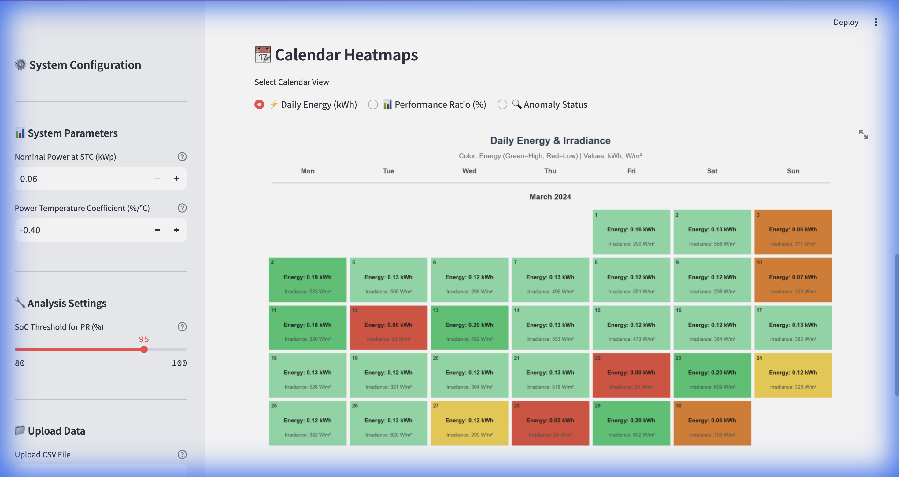
11.1 Performance Heatmaps
Visualize metrics across a calendar grid. Choose between Energy, PR, or Anomaly Status.
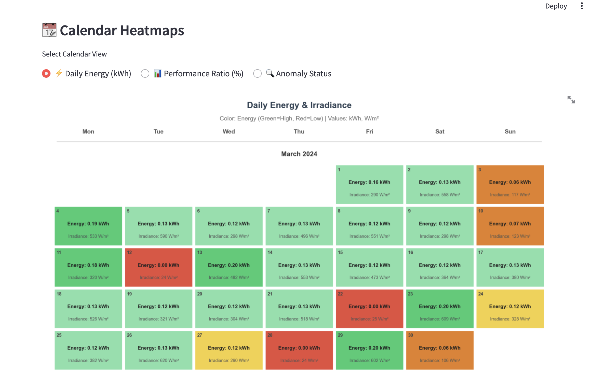
11.2 Anomaly Detection
The system flags days with issues: Red (Critical), Yellow (Warning), or Green (Normal).
12. Custom Range Analysis
Navigate to the 📆 Custom Range tab to analyze specific periods (e.g., a specific week).
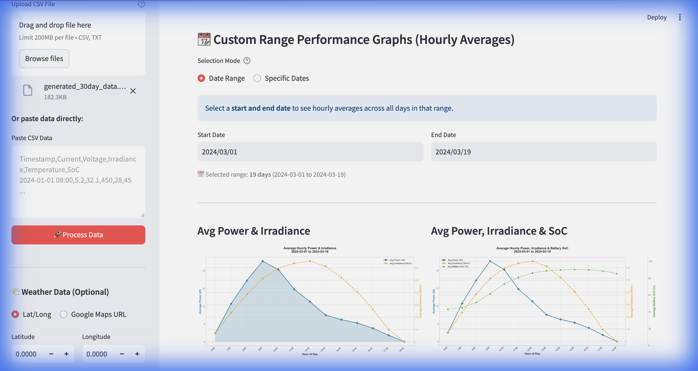
Select any Start Date and End Date to generate averaged graphs and aggregated metrics for that specific window.
12.1 Data Mode Selection
The Custom Range tab features a Data Mode toggle that allows you to compare performance metrics with and without anomalous data:
| Mode | Description | Use Case |
|---|---|---|
| All Data | Includes every single data point in the selected range | Raw, unfiltered view showing actual recorded values including faults and downtimes |
| Filtered Data | Excludes anomalous timestamps based on your filtering settings | Clean view showing what your system's performance would look like without faults/interruptions |
12.2 Understanding All Data vs Filtered Data
When to Use "All Data"
- Initial Analysis: Start with "All Data" to see the complete picture
- Fault Detection: Identify when and how often problems occurred
- Total Energy Accounting: Verify total energy production matches utility billing
- Baseline Comparison: Understand raw performance before filtering
When to Use "Filtered Data"
- True Performance Assessment: Determine if your system is performing well when it's actually running
- Comparison with Specifications: Compare against manufacturer's rated performance
- Troubleshooting: Isolate whether low output is due to system issues or temporary faults
- Financial Analysis: Calculate potential revenue if faults were eliminated
The difference between "All Data" and "Filtered Data" reveals the impact of system faults:
- Small difference (< 5%): System is running reliably with minimal faults
- Moderate difference (5-15%): Some intermittent issues worth investigating
- Large difference (> 15%): Significant recurring faults - immediate action needed
12.3 Filtered Data Analysis Section
When you select Filtered Data mode, the system displays an additional Filtered Data Analysis section showing:
Filtering Summary
A detailed breakdown of what was excluded:
📋 Filtering Summary:
Excluded 234 of 4,320 data points (5.4%)
Filter criteria:
- Irradiance > 50 W/m²
- Power ≤ 0 W
- SoC < 95%Comparison Graphs
Side-by-side visualizations comparing All Data vs Filtered Data averages:
- Power Comparison: Blue line (All Data) vs Green line (Filtered Data)
- Irradiance Overlay: Shows solar conditions remained constant
- Difference Shading: Visual representation of the gap between modes
Statistics Table
| Metric | All Data | Filtered Data | Difference |
|---|---|---|---|
| Avg Power (W) | 42.3 | 44.7 | +2.4 W (+5.7%) |
| Max Power (W) | 68.0 | 68.0 | 0 W (0%) |
| Avg Irradiance (W/m²) | 385 | 385 | 0 W/m² (0%) |
- Average Power Increase: Shows performance potential without faults
- Unchanged Max Power: Confirms filtering only removes zero/low-power anomalies, not peak performance data
- Unchanged Irradiance: Proves solar conditions were the same in both datasets, validating the comparison
12.4 Practical Use Case Example
Situation: A user notices lower-than-expected energy production in September.
Analysis Steps:
- Open Custom Range, select Sept 1-30
- View All Data: Average power = 38W (expected ~45W)
- Switch to Filtered Data
- System reports: "Excluded 412 of 8,640 points (4.8%)"
- Filtered average power = 46W
Conclusion: The system is actually performing to spec (46W ≈ expected 45W) when running. The problem is intermittent shutdowns causing 4.8% downtime. Investigation revealed a faulty circuit breaker that was randomly tripping during peak production hours.
Action Taken: Replaced circuit breaker. Following month showed < 0.5% excluded data points and 45W average even in "All Data" mode.
12.5 Tips for Effective Analysis
- Start Broad, Then Narrow: Begin with a full month, then drill down to specific problem days
- Compare Similar Periods: Use Custom Range to compare June vs July, or Week 1 vs Week 4
- Document Baseline: Record filtered performance when system is known-good as a reference
- Track Trends: Monitor the exclusion percentage month-over-month to detect degradation
13. Performance Ratio & Yield Analysis
Navigate to the 📊 PR & Yield Analysis tab for long-term performance trends.
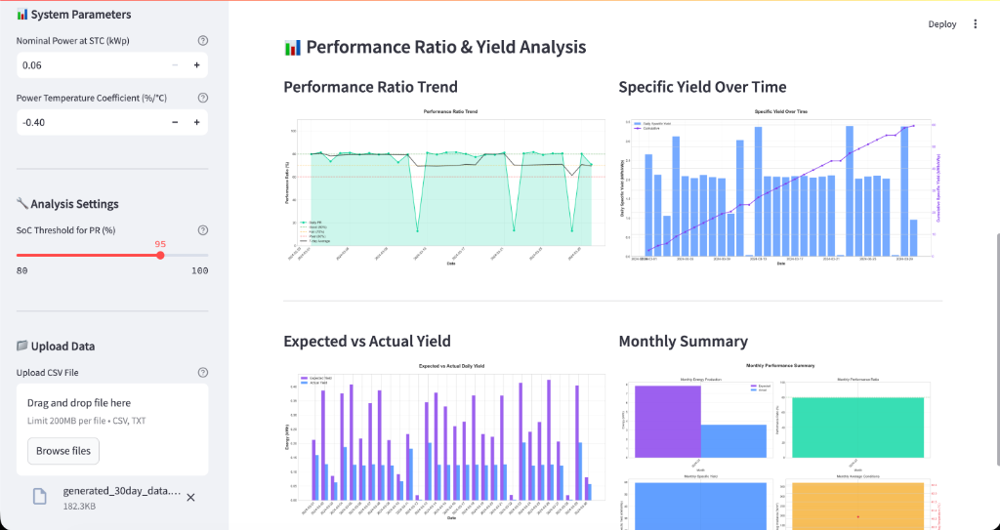
13.1 Performance Ratio Trend (Top Left)
This chart shows how your system's efficiency changes over time.
| PR Range | Performance Level | Recommended Action |
|---|---|---|
| 80%+ | Excellent | System performing optimally |
| 70-80% | Good | Normal operation |
| 60-70% | Fair | Investigate potential issues |
| Below 60% | Poor | Immediate inspection recommended |
13.2 Specific Yield Over Time (Top Right)
Shows energy production per unit of installed capacity with cumulative tracking.
13.3 Expected vs. Actual Yield (Bottom Left)
Compares theoretical maximum output against actual production to identify underperformance.
13.4 Monthly Summary (Bottom Right)
Four-panel summary showing monthly trends for energy, PR, yield, and conditions.
14. Temperature Effect Analysis
Navigate to the 🌡️ Temperature Effects tab to understand how heat impacts your panels.
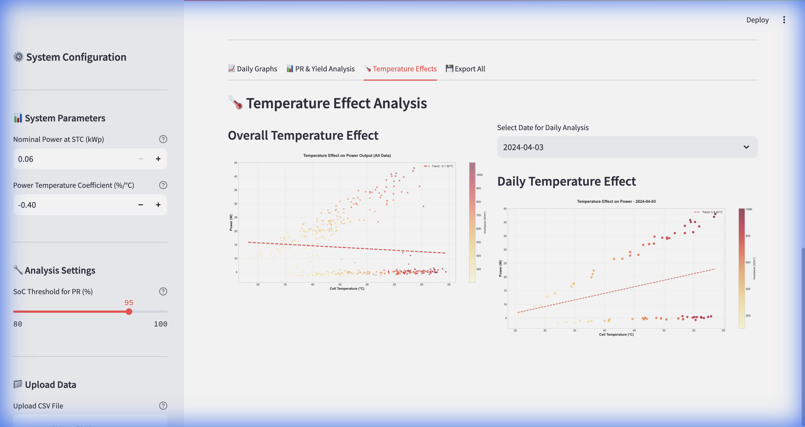
14.1 Overall Temperature Effect (Left)
This scatter plot shows power output vs. cell temperature for your entire dataset.
- Each dot represents one data reading
- Color gradient indicates irradiance (yellow/red = higher)
- Trend line shows the temperature effect coefficient
14.2 Daily Temperature Effect (Right)
Select a specific date to analyze temperature effects for that day only.
15. Data Quality Analysis
Navigate to the 📋 Data Quality tab to audit the health of your dataset.
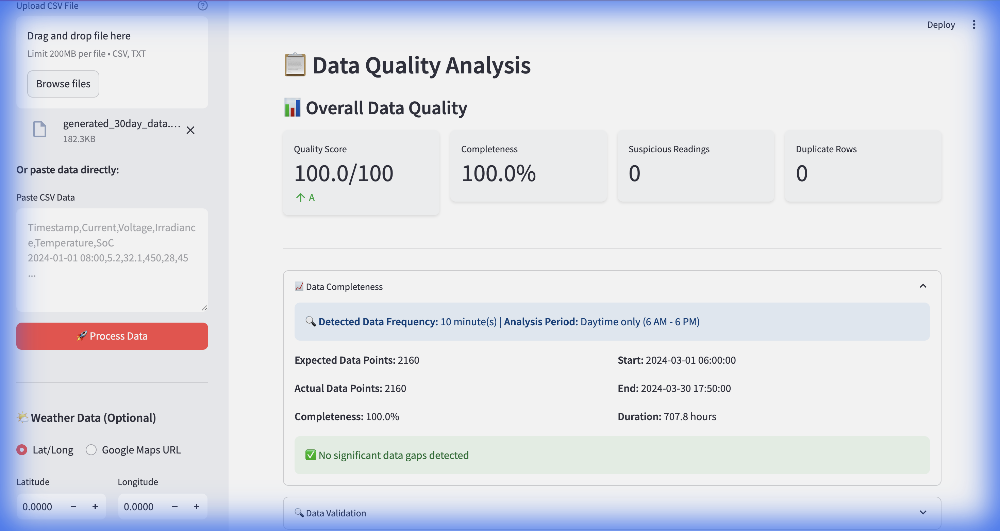
15.1 Data Completeness
Checks if you are missing data points based on your expected recording frequency.
15.2 Statistics
Provides basic statistics (Min, Max, Mean) for your data columns to help you understand the distribution.
13. Exporting Data & Reports
Navigate to the 💾 Export Options section to generate customized reports and data. The interface is divided into two tabs: 📊 Graph Export and 📝 Data Export.
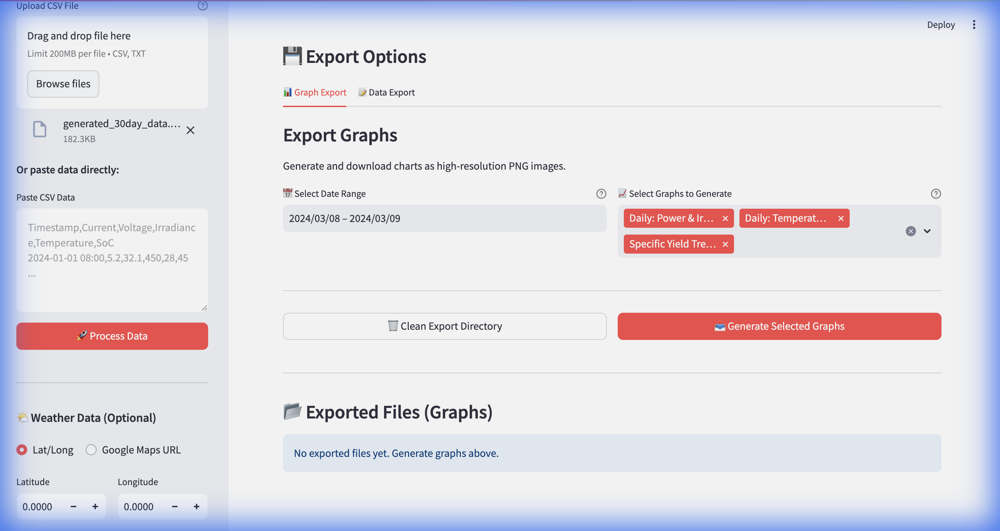
13.1 Graph Export
Generate high-resolution images of your charts with advanced filtering.
1. Select Filters
- Date Range: Choose specific Start and End dates to limit the analysis.
- Graph Types: Use the multiselect dropdown to choose exactly which graphs to generate.
2. Generate
Click "📥 Generate Selected Graphs". The system will create the requested images in the filtered date range.
3. Download
- View List: Expand the "Exported Files" section to see what was created.
- Download ZIP: Click "📦 Download Graphs as ZIP" to get all generated files in one package.
13.2 Data Export
Create custom CSV files of your processed data.
1. Custom CSV
- Select Columns: Choose specific columns you need (e.g.,
Timestamp,Power_W). - Download: Click "📥 Download Custom CSV".
2. Quick Downloads
Pre-configured full datasets are available at the bottom:
- Full Dataset: Complete processed data with all columns.
- Daily Metrics: Daily summaries (Energy, PR, etc.).
- Monthly Metrics: Monthly aggregated statistics.
14. Standalone Weather Analysis
The Standalone Weather Analysis tool allows you to explore historical weather data for any location on Earth without needing to upload your own solar data first. This is powerful for:
- Site Selection: Analyzing solar potential before installing panels.
- Comparison: Benchmarking your system against satellite weather data.
- Historical Review: Checking weather conditions for past dates.
14.1 Accessing the Tool
The Weather Analysis tool is now a dedicated view accessible from the sidebar.
- Look at the sidebar (left side of the screen).
- At the top, you will see two toggle buttons: "📊 Data Analysis" and "🌤️ Weather Tool".
- Click "🌤️ Weather Tool" to switch to the standalone Weather Analysis view.
- The main content area will now display the Weather Analysis interface.
- To return to your solar data analysis, click "📊 Data Analysis".
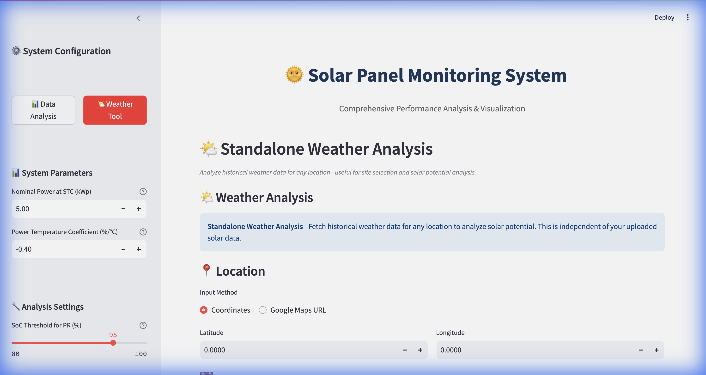
14.2 Location Selection
Accurate weather data depends on precise location inputs. You have two methods to define your site:
Method A: Google Maps URL (Recommended)
- Open Google Maps and find your exact location.
- Copy the URL from your browser address bar.
- Select "Google Maps URL" in the input tool.
- Paste the link and click "📍 Parse URL".
- The system will extract the exact Latitude and Longitude.
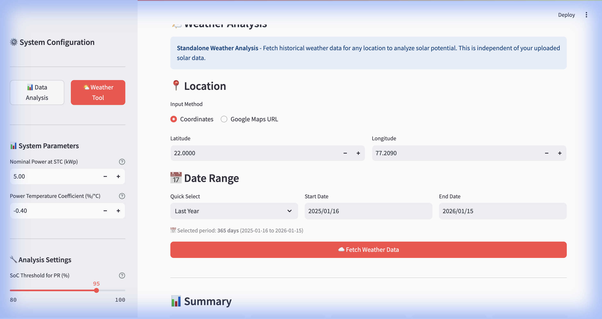
Method B: Manual Coordinates
- Select "Coordinates" in the input tool.
- Manually enter the Latitude and Longitude.
- Latitude range: -90 to 90 (North is positive, South is negative).
- Longitude range: -180 to 180 (East is positive, West is negative).
14.3 Date Range Selection
Choose the historical period you want to analyze.
- Quick Select: Use the dropdown for one-click presets:
- Last 7 Days (Recent weather)
- Last 30 Days (Monthly review)
- Last 3 Months / 6 Months / 1 Year (Seasonal and annual trends)
- Custom Range: Select "Custom Range" to pick specific Start and End dates from the calendar.
14.4 Understanding Weather Metrics
Once you click "☁️ Fetch Weather Data", the tool provides detailed atmospheric insights.
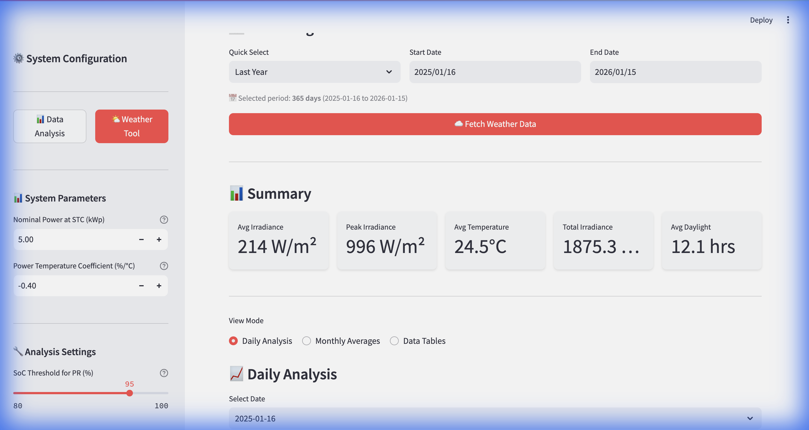
Solar Irradiance Components
Understanding the different types of solar radiation is critical for accurate analysis:
| Component | Symbol | Description | Visual Analogy |
|---|---|---|---|
| Direct Irradiance | DNI | Sunlight coming straight from the sun without scattering. | The light that casts sharp shadows. If you block the sun with your hand, you block this. |
| Diffuse Irradiance | DHI | Sunlight scattered by clouds, atmosphere, and dust. | The light on a cloudy day. It comes from the "whole sky" rather than just the sun disk. |
| Global Horizontal Irradiance | GHI | The total energy hitting a flat, horizontal surface. | GHI = Direct + Diffuse. This is the most important number for standard flat solar panels. |
Key Metrics Displayed
- Avg Irradiance: Theoretical average GHI during daylight hours.
- Peak Irradiance: The highest solar intensity recorded in the period.
- Total Irradiance: Total energy potential (kWh/m²) for the period.
- Daylight Hours: Calculated time between Sunrise and Sunset.
14.5 Detailed Analysis Views
The tool provides specialized views to analyze data at different resolutions:
1. Daily Profile Analysis
Detailed 24-hour profile for understanding daily patterns on a specific date:
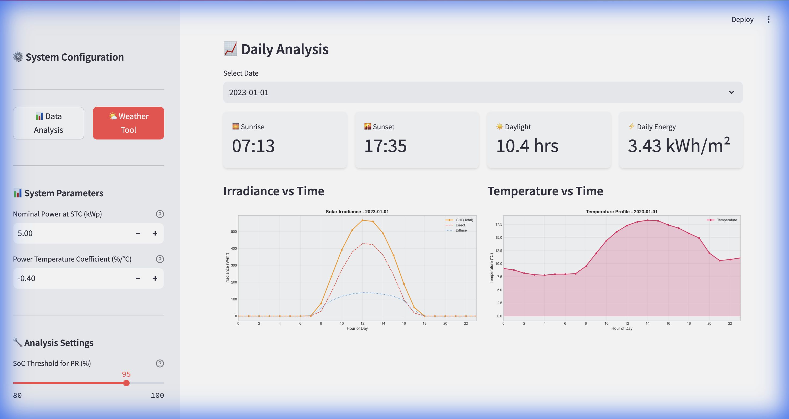
2. Monthly Hourly Averages
"Typical Day" view for the entire period, showing average hourly behavior:
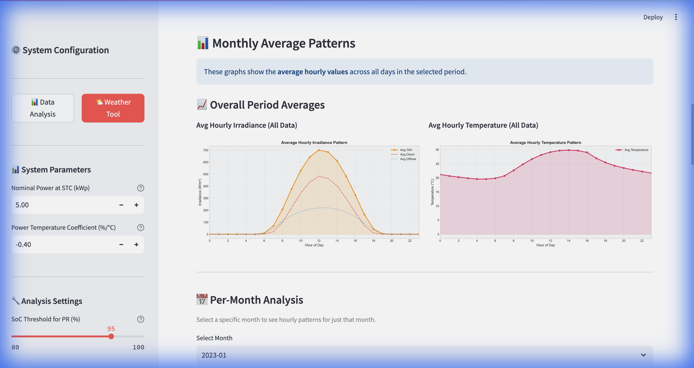
3. Data Tables
Access and download raw hourly/daily numbers:
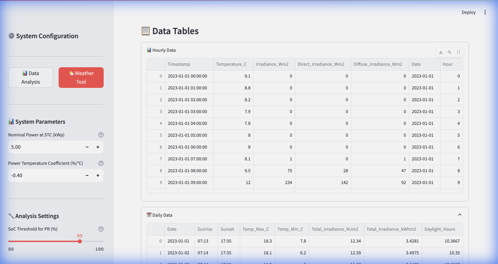
14.6 Yearly Daily Trends
Visualize how temperature and solar potential evolve over the entire year:
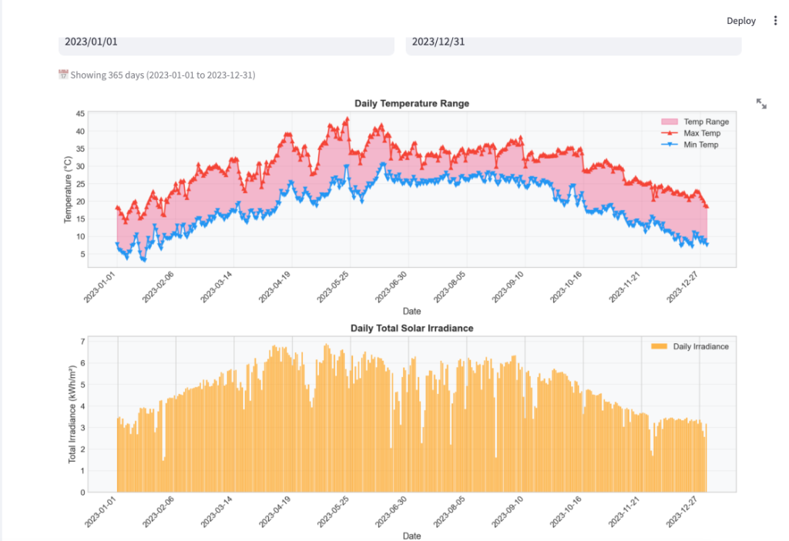
14.7 Per-Month Analysis
Drill down into specific months to see their unique hourly profiles:
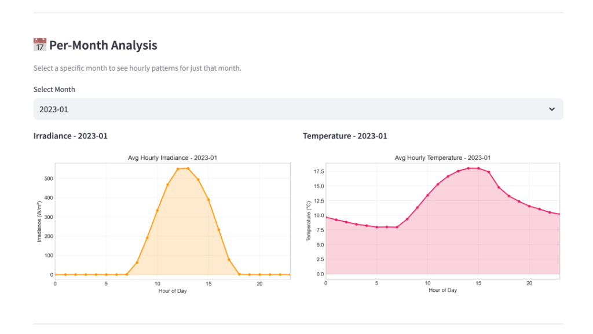
14.8 Calendar Comparisons
Compare aggregate performance across different calendar months:
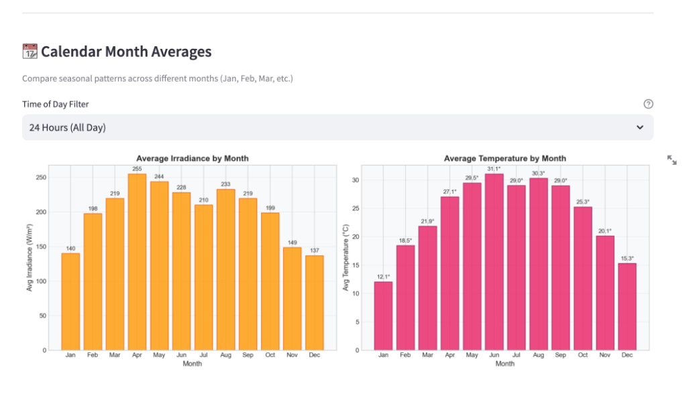
14.9 Daylight Availability
Understand the changing length of days and solar window:
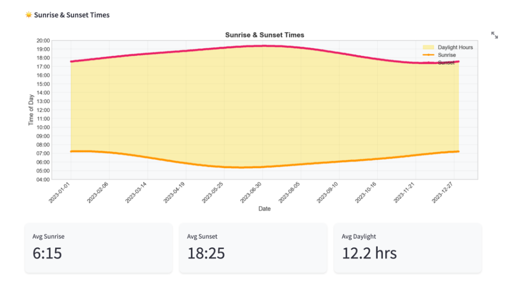
16. Power Anomaly Detection
The ⚠️ Power Anomalies tab helps you identify periods where your solar system produced unexpectedly low power despite having sufficient sunlight.
16.1 Purpose
This feature detects potential issues such as:
- Shading: Partial shading blocking panels during certain hours.
- Inverter Issues: Inverter not starting or tripping during high-irradiance periods.
- Wiring Problems: Connection issues causing power drops.
- Panel Degradation: Underperforming panels within a string.
16.2 Detection Logic
An anomaly is flagged when:
| Condition | Default Value | Meaning |
|---|---|---|
| Power < Threshold | 10 W | Power output is near zero. |
| Irradiance > Threshold | 50 W/m² | There is sufficient sunlight to expect power generation. |
| SoC < Threshold (if available) | 95% | Battery is NOT full. If battery is full (SoC ≥ 95%), low power is expected (curtailment) and is NOT an anomaly. |
16.3 Configurable Thresholds
You can adjust all three thresholds using the input fields at the top of the tab:
- Power Threshold (W): Maximum power to consider "low" (default: 10W).
- Min Irradiance (W/m²): Minimum sunlight to flag as an anomaly (default: 50 W/m²).
- SoC Exclusion Threshold (%): Exclude data points where SoC is above this value (default: 95%).
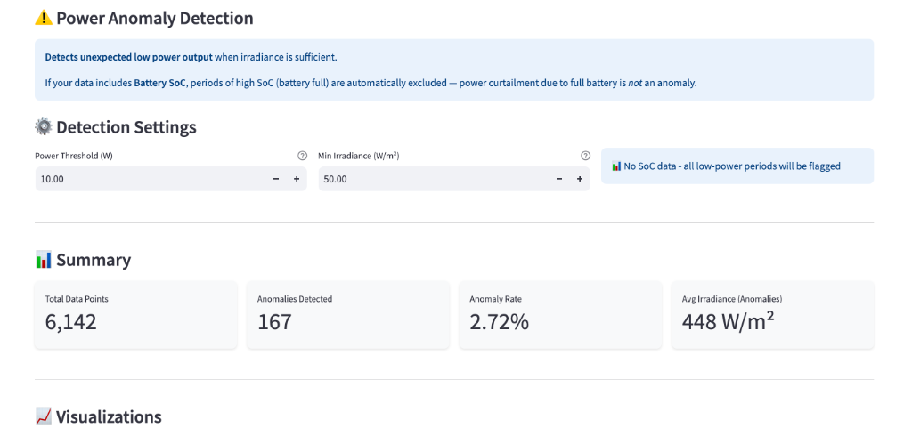
16.4 Summary Metrics
After detection, the tab displays:
- Total Data Points: Number of readings in your dataset.
- Anomalies Detected: Count of flagged low-power points.
- Anomaly Rate: Percentage of total data that are anomalies.
- Avg Irradiance (Anomalies): Average sunlight level during anomaly periods.
16.5 Visualizations
Two visualizations help you understand the anomalies:
1. Scatter Plot (Power vs Irradiance)
- Gray points: Normal operation (power increases with irradiance).
- Red points: Anomalies (low power despite good irradiance).
- A dashed red line shows the power threshold, and an orange dashed line shows the irradiance threshold.
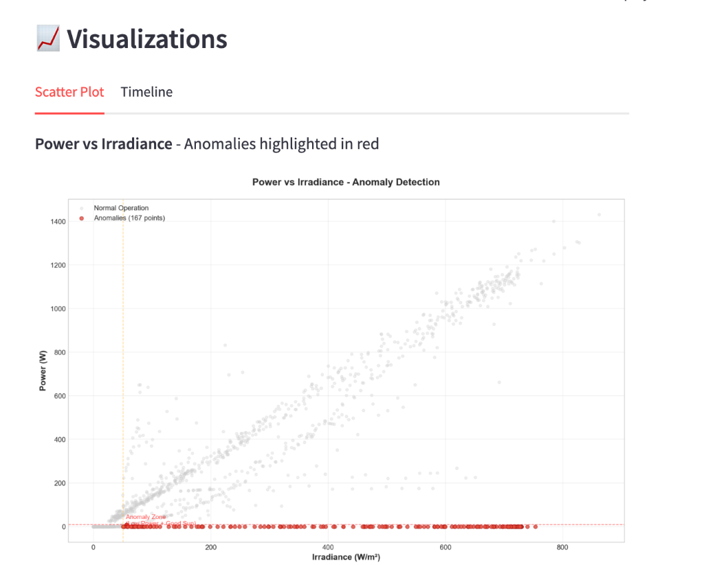
2. Timeline (Daily Anomaly Count)
- A bar chart showing how many anomalies occurred on each day.
- Helps identify if anomalies are concentrated on specific dates (e.g., a shading event on a particular day).
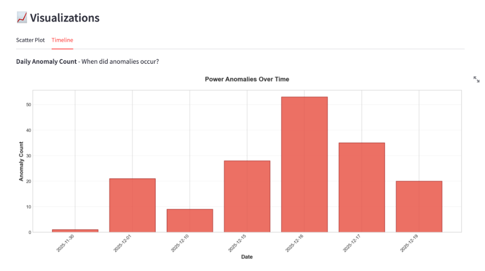
16.6 Data Table & Export
Expand the "View All Anomaly Points" section to see a table of every flagged data point.
- Columns include: Timestamp, Power, Irradiance, Voltage, Current, SoC (if available).
- Click "📥 Download Anomalies CSV" to export the table for further analysis.
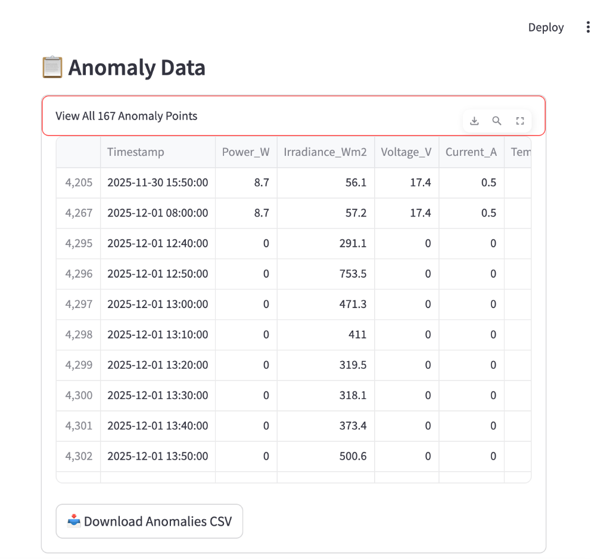
15. Troubleshooting
15.1 Common Issues
"Please upload a file or paste data to process"
Solution: Upload a CSV file or paste data, then click "🚀 Process Data"
Power values showing "None" or 0
Solution: Check that your column headers match expected formats. Verify column detection shows ✅ for current and voltage.
Performance Ratio showing very low values
Solution: Verify your Nominal Power setting is in kWp (not W). Check if voltage was auto-converted from mV.
No graphs appearing
Solution: Ensure your data has all required columns (Timestamp, Current, Voltage, Irradiance) and at least one full day of readings.
16. Glossary
| Term | Definition |
|---|---|
| DC Current | Direct current flowing from solar panels (Amperes) |
| DC Voltage | Direct current voltage from solar panels (Volts) |
| GHI | Global Horizontal Irradiance – total solar radiation on horizontal surface |
| Irradiance | Solar power per unit area (W/m²) |
| kWh | Kilowatt-hour – unit of energy |
| kWp | Kilowatt-peak – rated power under STC |
| PR | Performance Ratio – system efficiency measure |
| SoC | State of Charge – battery level (%) |
| STC | Standard Test Conditions – 1000 W/m², 25°C |
| Specific Yield | Energy per capacity (kWh/kWp) |